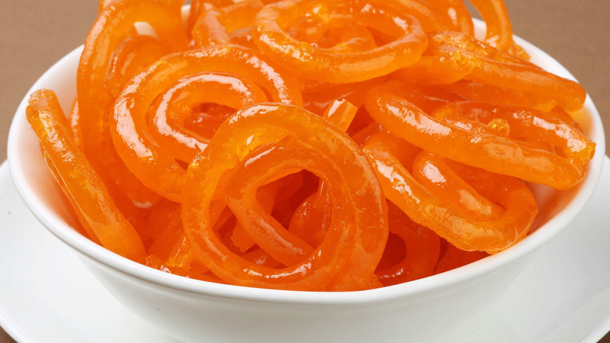

Gujhiya RECIPE

Items Needed to Prepare Pani-Puri
- 3 cup all purpose flour
- 2 cup hung curd
- 1/2 cup ghee
- 3 cup sugar
- S5 strand saffron
- 1/2 teaspoon powdered green cardamom
- 1/2 cup corn flour
- 1 1/2 pinch baking soda
- 2 cup sunflower oil
- 3 cup water
- 4 drops rose essence
List of Instruction to be followed To Prepare Pani-Puri
- Prepare the Jalebi batter and let it ferment overnight
- Deep fry the Jalebis
- Soak the Jalebis in sugar syrup and serve